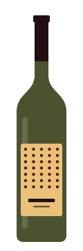
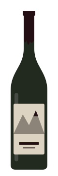
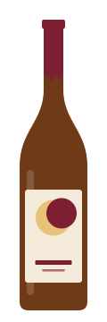
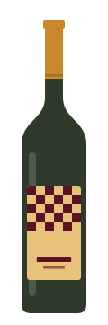
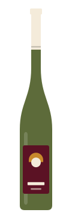
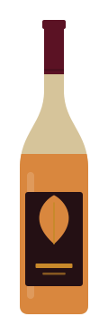

Click & collect · retrait à la cave
La boutique
Seize bouteilles de la cave, disponibles tout de suite. Réservez-les ici, payez en ligne, passez les prendre : votre sac vous attend au frais, à votre nom.
- Retrait dès 2 h après la commande, aux heures d’ouverture.
- Pas de minimum. À partir de 6 bouteilles, −5 % sur le total.
- Toute la cave (180 vins) reste disponible au comptoir.
-

Gamay de Pierre
Domaine Lafrêche · gamay
Cerise croquante, granit. Se sert frais, autour de 14 °C. Le rouge du mardi soir.
17 € -

Petit Caillou
Mas de l’Escarbille · cinsault, grenache
Fruits rouges et garrigue légère, aucune dureté. Pour les grillades et les copains.
12 € -
La Fougue
Domaine Vaurelle · côt
Mûre, poivre, un joli grain. Il aime passer une heure en carafe.
15 € -

Ombre Haute
Clos des Ravinettes · gamay d’Auvergne
Vignes à 500 m sur basalte : tendu, fumé, très digeste.
22 € -

Trousseau des Combes
Domaine Brûlefer · trousseau
Robe pâle, épices douces, une profondeur rare. À partager avec qui saura l’apprécier.
34 € -
Syrah sauvage
Les Vignes Basses · syrah
Violette, olive noire, poivre. Superbe avec un plat mijoté.
19 € -

Vin de soif, le litre
Domaine Lafrêche · gamay
Le litre des apéros qui s’éternisent. Fruité, léger, sans prise de tête.
9 € -

Chenin des Lauzes
Domaine de la Bruyère Haute · chenin
Coing, miel et schiste. Un blanc droit qui tiendra dix ans en cave.
24 € -
Savagnin ouillé
Domaine Brûlefer · savagnin
Noix fraîche, citron confit, une longueur folle. Pour un comté de 24 mois.
39 € -
Sel de Mer
Mas de l’Escarbille · piquepoul
Citron, iode, salinité. Huîtres, sardines grillées, terrasse.
11 € -

Altesse en l’air
Domaine Clapassou · altesse
Fleurs blanches, amande, la fraîcheur des montagnes. Pour la fondue, évidemment.
21 € -

Pinot gris macéré
Domaine Kieffer-Lenz · pinot gris
Dix jours sur peaux : abricot sec, thé noir, légère amertume. Cuisine épicée.
26 € -

Muscat à l’ombre
Mas Ferrol · muscat d’Alexandrie
Sec, si si ! Écorce d’orange, rose, tanin fin. Le plus surprenant de la cave.
18 € -
Rouge-Gorge
Les Vignes Basses · grenache
Pêche de vigne, fraise des bois. Un rosé de repas, pas de piscine.
13 € -
Grolleau gris
Clos Pétrel · grolleau gris
Pamplemousse rose, poivre blanc. Seulement 10,5 % d’alcool.
14 € -

Bulle d’Août
Domaine Vaurelle · chenin
Pét-nat trouble et joyeux, poire et brioche. Décapsulez-le bien frais.
16 €
Aucun vin ne correspond à ces deux filtres. Au comptoir, on en a sûrement un !